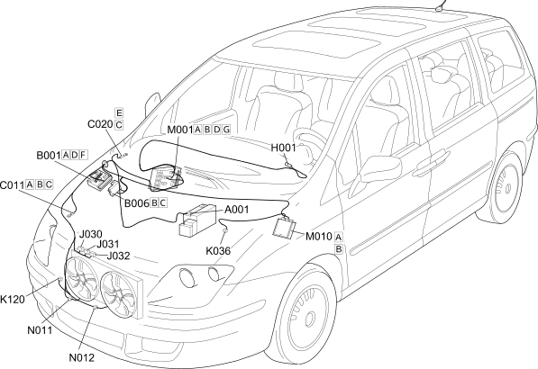

E5020 ENGINE COOLING COMPONENT LOCATION
- Path
- Electrical equipment > 1 ELECTRICAL FUNCTIONS > E50 ENGINE CONTROL AND MANAGEMENT SYSTEMS > E5020 ENGINE COOLING > E5020 ENGINE COOLING COMPONENT LOCATION
- Kind
- topic
- Applies to
- engines: 2.0 16V JTD, 2.2 16V JTD; all production periods; only with equipment: MY 2005
- Interactive page
- https://sloeber94.github.io/elrnDB-fUlss/en/#/179009252
Applies to: engines: 2.0 16V JTD, 2.2 16V JTD; all production periods; only with equipment: MY 2005

Component code | Description | Reference to the assembly |
|---|---|---|
BATTERY | - | |
ENGINE COMPARTMENT JUNCTION UNIT | ||
MAXI FUSE BOX - 2 | - | |
RIGHT FRONT EARTH | - | |
PASSENGER SIDE DASHBOARD EARTH | - | |
FRONT/DASHBOARD COUPLING | - | |
Ignition switch | ||
ENGINE FAN SPEED 1 RELAY | - | |
ENGINE FAN SPEED 2 RELAY | - | |
ENGINE FAN SPEED 2 RELAY | - | |
ENGINE COOLANT TEMPERATURE SENSOR/SENDER UNIT | ||
LINEAR SENSOR FOR FANS | - | |
BODY COMPUTER | ||
ENGINE MANAGEMENT CONTROL UNIT | ||
ENGINE FAN MOTOR | ||
ENGINE FAN MOTOR - 2 |
Topics linked from this page (21)
- 1056B MULTI-POINT INJECTION SYSTEM (MPI)
- 1060G DIESEL INJECTION PRESSURE PUMP ELECTRONIC CONTROL
- 1088E COOLANT TEMPERATURE CONTROL DEVICES
- 5505A MULTI-FUNCTION COMPONENTS
- 5520A IGNITION SWITCH
- A001 BATTERY
- B001 ENGINE COMPARTMENT JUNCTION UNIT
- B006 MAXI FUSE BOX - 2
- C011 RIGHT FRONT EARTH
- C020 PASSENGER SIDE DASHBOARD EARTH
- D001 FRONT/DASHBOARD COUPLING
- H001 Ignition switch
- J030 ENGINE FAN SPEED 1 RELAY
- J031 ENGINE FAN SPEED 2 RELAY
- J032 ENGINE FAN SPEED 2 RELAY
- K036 ENGINE COOLANT TEMPERATURE SENSOR/SENDER UNIT
- K120 LINEAR SENSOR FOR FANS
- M001 BODY COMPUTER
- M010 ENGINE MANAGEMENT CONTROL UNIT
- N011 ENGINE FAN MOTOR
- N012 ENGINE FAN MOTOR - 2